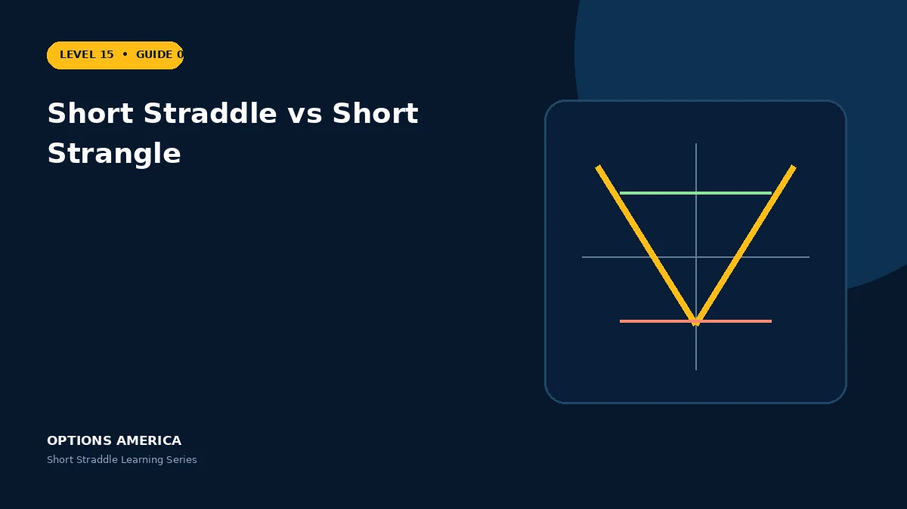

Compare two neutral premium-selling strategies across strikes, credit, probability range, Greeks and tail risk.
Strike placement
The short straddle sells an ATM call and put at the same strike. The short strangle sells an OTM call above price and an OTM put below price.
Credit and range
The straddle normally collects more credit, but its intrinsic exposure begins immediately after any price move. The strangle collects less and provides space between its short strikes.
Greeks
ATM options give the straddle stronger gamma, theta and vega exposure. A strangle often starts with smaller sensitivities but can become highly reactive when price approaches either short strike.
Shared tail risk
Both retain an uncovered short call and put, so neither defines tail loss. Strike distance should never be mistaken for protection during a sufficiently large move.
A practical example
With stock at $100, compare a 100 straddle collecting $9 with a 90/110 strangle collecting $4. The strangle starts wider but offers less credit to absorb a tail move.
This simplified scenario focuses on expiration outcomes; live prices and risks will differ. Live option prices also reflect the underlying price, time decay, rates, dividends, liquidity and transaction costs. Greeks are theoretical estimates, not guarantees.
Build a risk-first trading plan
Before using short straddle vs short strangle, record the underlying price, strike, expiration, total credit and contract multiplier. Calculate both expiration breakevens, then model losses beyond them rather than stopping at the profitable range. The maximum credit is visible at entry, but the largest future loss is not.
Stress at least five underlying prices, a volatility increase and decrease, and several dates. Include a gap that cannot be adjusted intraday. Review delta, gamma, theta and vega at the position and portfolio level because several neutral premium trades can become directional together.
Define a profit target, maximum tolerated loss, margin reserve, event rule and latest exit date. Use a single multi-leg order where possible and verify both legs after every fill or adjustment. This process does not eliminate risk, but it makes the decision measurable and repeatable.
After the trade, record actual movement, volatility change, slippage and the largest directional exposure. Comparing those results with the original forecast helps separate sound execution from a lucky outcome and improves future duration, strike and position-size decisions.
Frequently asked questions
Which collects more premium?
Normally the short straddle.
Which starts with a wider range?
The short strangle.
Is the strangle defined risk?
No.
Continue the Short Straddle cluster
Explore related guides: Short Straddle vs Iron Butterfly · Theta and Time Decay in a Short Straddle · Short Straddle Options Strategy: 12 Mistakes to Avoid. For a structured sequence, use the free Level 15 – Short Straddle course.
Options involve risk and are not suitable for every investor. This material is educational and is not investment, tax or legal advice. Greeks are theoretical estimates, and contract terms and broker requirements can vary.
Next: Continue with the complete Short Strangle guide.